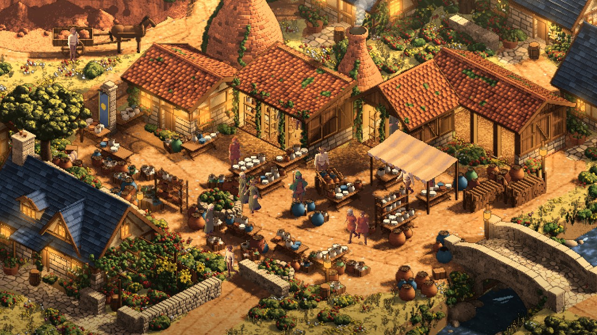

Day 29: the Kilnworth method — from reference scan to playable town
The Kilnworth method starts with a detailed scan of the reference image: studying what is actually in the picture, measuring its visual qualities, and using that information to reconstruct the town in the game.
20 October 2026

This is Kilnworth in the game, reconstructed from its reference. The scan of that reference is the defining step of the method. Rendering and visual review support the reconstruction, but the starting point is the information recovered from the picture.
Read the reference closely enough to build it
A reference contains far more than a theme. It shows the shapes and arrangement of buildings, how roofs overlap, where the ground rises or falls, how a working yard is organised, and which details give the place its identity.
For Kilnworth, that means two bottle kilns rising behind a stepped range of potters’ sheds, cottages around a pottery court, an excavated clay pit up a haul track, and a stream, bridge and mill along the other side. Those relationships become the basis of the town’s reconstruction.
The scan also looks at the picture’s materials and light. The red clay roofs, blue-grey slate, warm earth, kiln brick and sheltered workshop interiors each carry information that a loose description would miss.
Measuring the picture’s colour
One concrete part of the process is sampling the reference’s material colours. The town’s palette records nine steps for each material, from deepest shade to brightest light. Material pixels are sorted by brightness and averaged within each ninth to form those ramps.
That preserves the reference’s changes of hue as well as brightness: the way red-brown shade warms towards gold, or slate keeps its cooler character beside the tiles. The renderer can then use those measured colours when lighting the reconstructed geometry.
Light direction was checked against the reference’s pixels too. The kiln faces and the direction of their shadows helped correct the position of the sun.
From the scan to the town
The information read from the reference is translated into a town brief, layout rules, geometry and materials. Kilnworth’s brief pins the potters’ yard, two kilns and falling-stream setting, while the generator builds the town from those instructions.
The reconstructed scene is then traced into the game’s isometric pixel view. It retains depth so people can pass behind buildings, and houses have cutaway views for going inside. Doors, the bridge and the pit’s ramp must also work as places to walk.
The sequence is reference scan → reconstruction data and rules → town geometry → playable scene. Matched images and close-up reviews help identify where that reconstruction still differs from the source.
This is an authored analysis and reconstruction workflow. It is not a claim that a finished town can be extracted automatically from any image in one click.
Why this matters for Sprawl
The scan gives us a much more specific starting point than a general instruction to make a picturesque village. It carries the reference’s actual visual decisions into the implementation: the arrangement of its landmarks, its material palette, its light and the character of its working spaces.
That is the part we want to carry into other towns and landscapes. Each reference deserves its own careful reading, so a timber town, a coaching inn or a birch wood retains the features that make it recognisable.
The resulting parts and relationships can also inform procedural rules. Kilnworth is a pinned brief within a potters’ town generator; other seeds can produce variations. Those variations still need checking to establish how well they preserve what the reference taught us.
The reconstruction still has to earn its place
The scan provides the foundation. Water and mill details, open sheds, material texture, figure readability and preparation time remain subjects for improvement. Applying the process to another town does not by itself prove that town has reached the reference’s quality.
The important change is where the work begins: with a scan of the image detailed enough to guide the town’s construction. Kilnworth is the first example we are using to carry that approach further.